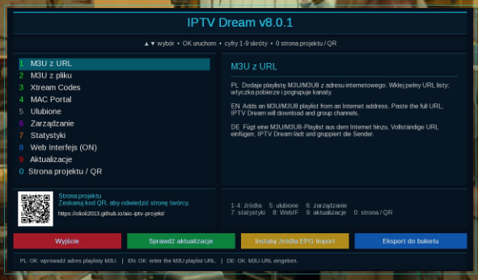

🔥 NOWOŚCI • AIO IPTV PL
Najnowsze aktualizacje projektów
W jednym miejscu znajdziesz nowe wydania wtyczek i aplikacji AIO, najważniejsze zmiany oraz bezpośrednie przejście do pełnego opisu i pobierania.
Ostatnie duże wydania
Aktualnie wyróżnione projekty

NOWY PROJEKT • 14.09.2026
AIOHD NEXT 3.2.1
MiniTV, 3 rozmiary listy kanałów, pogoda inline, palety Aurora / Amber / Violet, rozbudowany InfoBar i EPG z czterema kolejnymi audycjami.
Zobacz projekt i pobierz IPK →
14.09.2026
AIO Panel 16.0.3
Do sekcji Skórki dodano bezpośredni instalator AIOHD NEXT 3.2.1. Pozostałe funkcje i poprawki 16.0.2 pozostają bez zmian.
Zobacz aktualizację →
07.09.2026
IPTV Dream 8.0.1
Poprawiony eksport kanałów bez N/A, M3U/Xtream/MAC i MAC/Stalker, WebIF, EPG i instalator.
Zobacz aktualizację →
15.08.2026
Simple IPTV EPG 3.0.0 r1
AutoMapper, XMLTV, SAT→IPTV, cache zależny od źródła, scheduler i diagnostyka.
Zobacz aktualizację →Historia wydań
Wszystkie aktualizacje
Ładowanie historii aktualizacji…